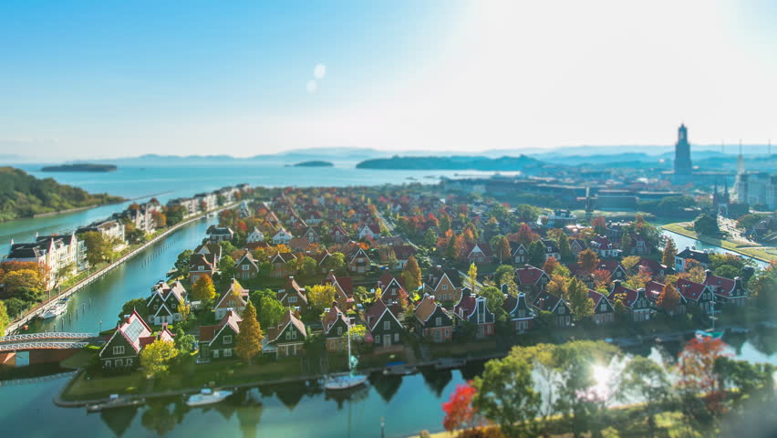

Nagazaki
A cidade de Nagasaki sempre foi famosa pelo seu porto, bem como pelo estilo de vida extraordinariamente cosmopolita dos seus habitantes. Não é por isso surpresa que o porto seja bem mais do que uma zona utilitária. Aqui, o porto é uma zona de lazer, com trilhos para percorrer com calma, amplos relvados para jogar à bola com as crianças ou fazer piqueniques com os amigos, e até retiros sossegados com o gorgolejar das fontes.
Descubra o parque Mizubenomori, ao seu dispor de modo gratuito e conveniente, 365 dias por ano.
HuisTen Bosch

É um parque temático holandês, foi criado em 1992 e tem 152 hectares, é repleto de hotéis, restaurantes e edifícios em estilo holandês, além de recriar tipicamente as mais belas paisagens da Holanda como os campos de tulipa, os canais e os moinhos.
HeiwaKoen
Outro local a ser visitado é o Parque da Paz, chamado de HeiwaKoen. Ele foi feito sobre uma elevação perto da onde a bomba atômica explodiu. Na praça há uma estátua de 10 metros de altura que representa o desejo dos moradores de Nagasaki: a paz.